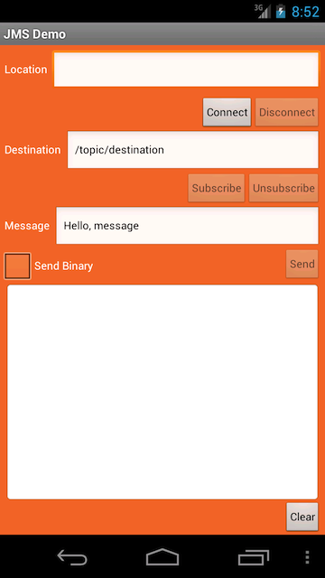

This checklist provides the steps necessary to enable your Android client to communicate with your JMS-compliant message broker using the Android JMS Client API, available in the Kaazing Enterprise Android Client SDK. To download the SDK, see Setting Up the Gateway and Clients.
#
Step
Topic or Reference
1
Learn about supported browsers, operating systems, and platform versions.
Learn to use the Kaazing Android JMS Client API and the supported methods. This topic also includes a walkthrough to show you how to build a simple Android JMS client.
In this how-to, you will learn how to use the Kaazing Android JMS Client API available in the Kaazing Enterprise Android Client SDK to enable your Android application to communicate with your JMS-compliant message broker, such as TIBCO Enterprise Message Service (EMS), Informatica UM, Apache ActiveMQ, and JBoss, using WebSocket and JMS.
Overview of the Kaazing Android JMS Client API
The Kaazing Enterprise Android Client SDK includes an Android JMS Client API that allows Android clients to subscribe and publish messages to their JMS-compliant message broker. With the Android JMS Client API and the Gateway, you can leverage WebSocket in your Android client. Communication between your Android client and the JMS-compliant message broker is performed over WebSocket, as shown in the following figure:
Figure: Enable Communication Between Your Client and the JMS-compliant message broker
About the Kaazing Android JMS Client API
The Kaazing Enterprise Android Client SDK includes an Android JMS Client API to enable you to create JMS-based clients specifically for your Android devices. As an Android developer, you can use this API to publish and subscribe to JMS-based messages between your client and your JMS-compliant message broker.
The Android JMS Client API exposes capabilities similar to the Java Message Service (JMS) API in Java, including the JMS concepts of connection, session, destination, message consumer, and message producer. Refer to the JMS API documentation, located at http://www.oracle.com/technetwork/java/docs-136352.html, for specific information about how to use each of the interfaces.
Note: Java Naming and Directory Interface (JNDI) is a Java API for a directory service. The Kaazing Enterprise Android Client SDK does not support JNDI. JNDI is supported in the Java JMS Client API. For more information, see Build Java JMS Clients.
About Android
Android is an operating system used by touchscreen smart phones and tablets. Android clients are developed in the Java programming language using the Android software development kit (SDK). The SDK includes development tools, software libraries, and an Android device emulator.
The officially supported integrated development environment (IDE) for Android development by Google Android Studio.
Take a Look at the Kaazing WebSocket Gateway Android Client Tutorial Application
Create a new Android Virtual Device to run the app. The minimum Android SDK for the virtual device is API 19: Android 4.4 (KitKat).
In Android Studio, click the Run icon, select the target virtual device, and click OK. The Android emulator launches.

Figure: Android JMS Client
In the Location field, enter wss://sandbox.kaazing.net/jms.
Click Connect. The messages CONNECTING and then CONNECTED appear. The WebSocket connection to the Gateway and Apache ActiveMQ was successful.
Click Subscribe. The message SUBSCRIBE - /topic/destination appears. You have subscribed to the destination.
Click Send. The following messages appear: RECEIVED TextMessage: Hello, message
SEND TextMessage: Hello, message
You sent the message Hello, message to the destination and received the same message because you are subscribed to that destination.
Click the Send Binary checkbox and click Send again. The following messages appear: SEND BytesMessage: Hello, message
RECEIVED BytesMessage: 0,14,72,101,108,108,111,44,32,109,101,115,115,97,103,101